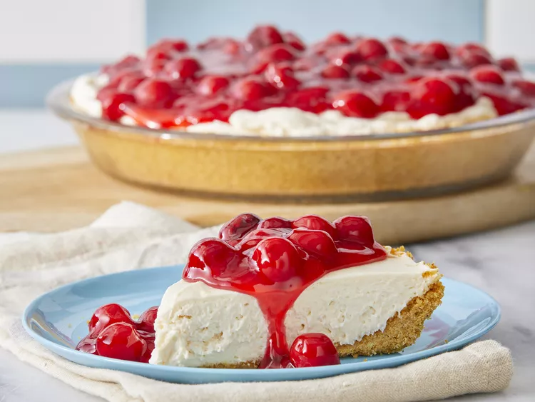

Cheesecake with Cool Whip

Description
This no-bake cheesecake features a smooth, rich, and creamy filling that's impossible to resist. Plus, the easy recipe doesn't require an oven — so it's perfect for busy holidays when the kitchen is full.
ingredients
- 2 (8 ounce) packages cream cheese, softened to room temperature
- 1 cup white sugar
- 3 tablespoons vanilla extract
- 1 teaspoon lemon extract (Optional)
- 1 (8 ounce) container frozen whipped topping (such as Cool Whip®), thawed
- 1 (9 inch) prepared graham cracker crust
- 1 (21 ounce) can strawberry pie filling
Steps
- Gather all ingredients.
- Combine cream cheese, sugar, vanilla, and lemon extract in a large bowl; beat with an electric mixer until smooth and creamy.
- Fold in whipped topping.
- Pour mixture into graham cracker crust and smooth evenly.
- Top with pie filling and refrigerate until firm, 2 to 3 hours.